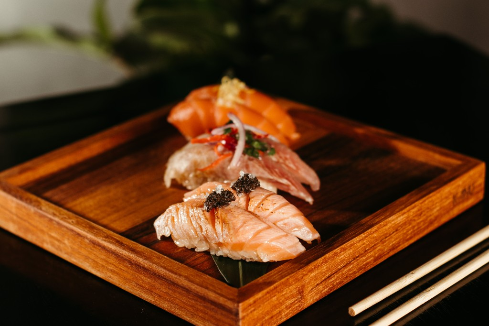
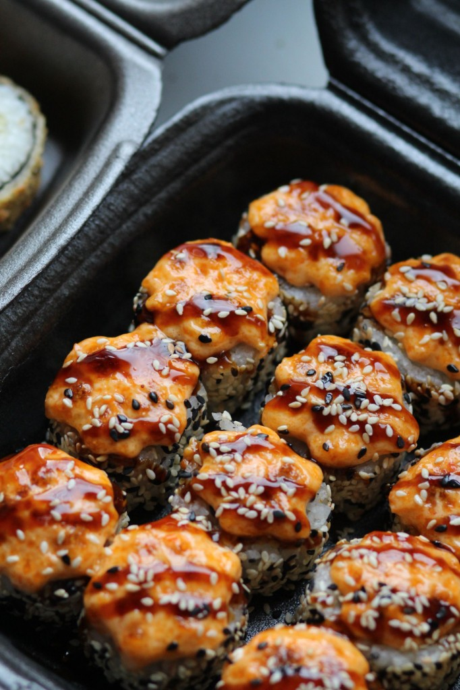
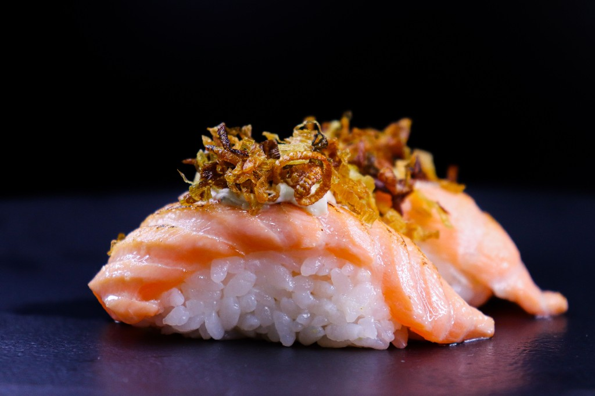
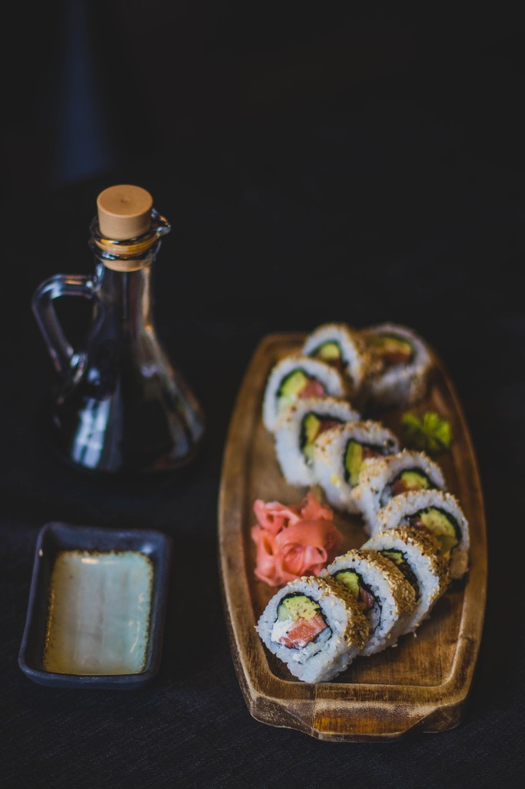
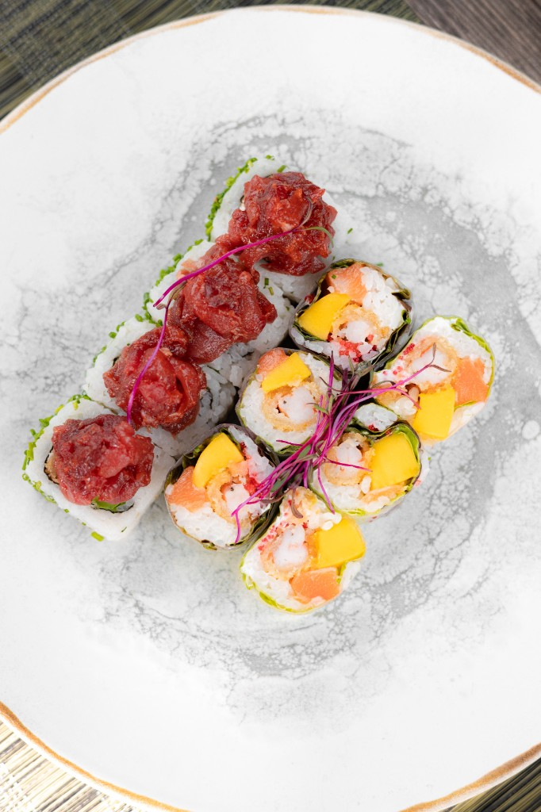
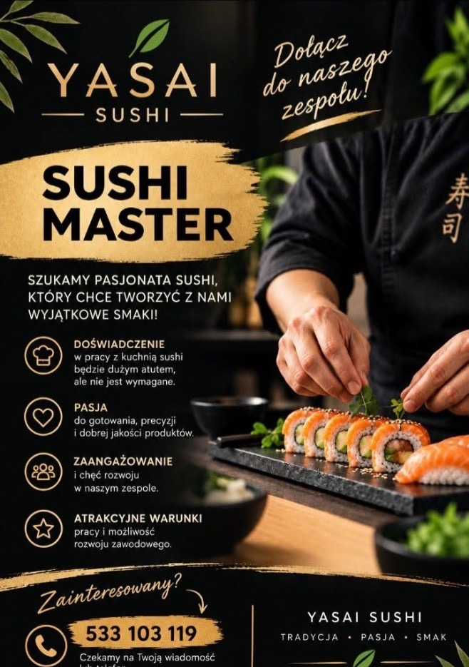

Maki
Klasyczne, cienkie rolki w nori

Nowe miejsce w Mosinie
Świeże ryby, chrupiące warzywa i ryż przygotowywany codziennie na miejscu. Zjedz u nas, odbierz po drodze do domu albo zamów z dowozem.
Tradycja • Pasja • Smak
Ryby i warzywa od sprawdzonych dostawców, dostarczane kilka razy w tygodniu.
Każda rolka powstaje na zamówienie, na oczach gości – bez półproduktów.
Yasai po japońsku znaczy „warzywa” – dlatego roślinne zestawy traktujemy na serio.
Dowozimy na terenie Mosiny i okolic.
Z naszej kuchni




O nas
Yasai Sushi to nowe miejsce na kulinarnej mapie Mosiny. Chcieliśmy, żeby dobre sushi było tu na wyciągnięcie ręki – bez jeżdżenia do Poznania.
Stawiamy na proste zasady: świeży produkt, ryż doprawiany według tradycyjnej receptury i rolki składane na bieżąco. Obok klasyki znajdziesz u nas autorskie kompozycje i rozbudowaną część wegetariańską – w końcu nasza nazwa zobowiązuje.
Dołącz do naszego zespołu!
Szukamy pasjonata sushi, który chce tworzyć z nami wyjątkowe smaki.
Czekamy na Twoją wiadomość lub telefon.
